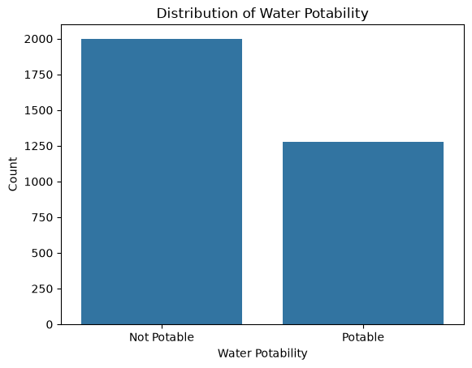
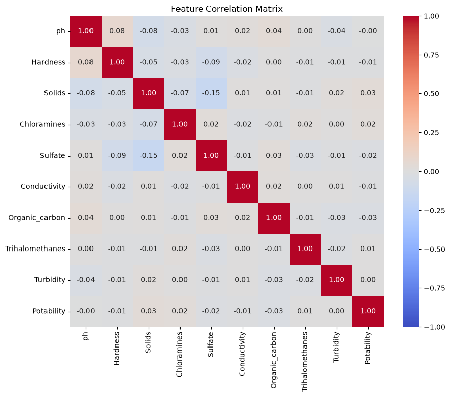
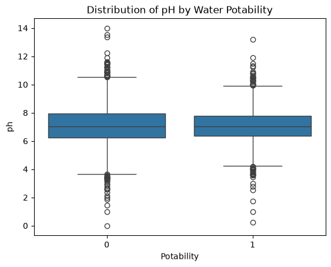
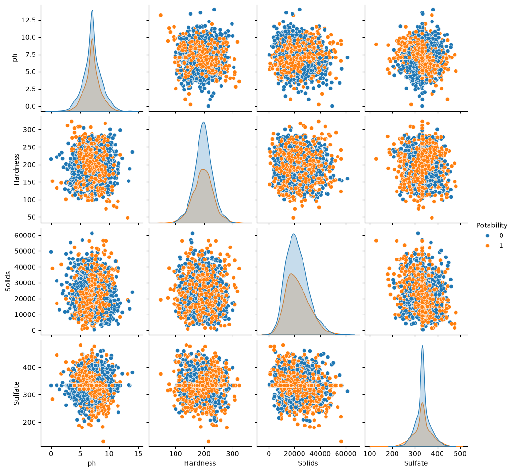
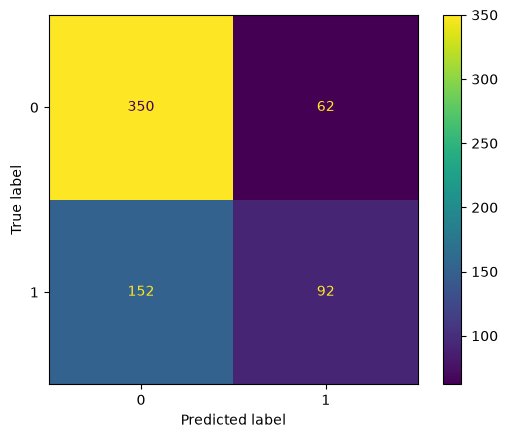

An end-to-end data science project demonstrating data cleaning, exploratory data analysis, machine learning, and model evaluation using Python and Scikit-learn.
GitHub RepositoryThe objective of this project was to develop a baseline machine learning model capable of predicting whether a water sample is potable using physicochemical measurements. The project demonstrates an end-to-end data science workflow, including data cleaning, exploratory data analysis, model development, and evaluation.
| Dataset | Kaggle Water Quality and Potability Dataset |
|---|---|
| Problem Type | Binary Classification |
| Target | Potability |
| Model | Random Forest Classifier |
The dataset contains 3,276 water samples with nine numerical water quality measurements and a binary target indicating whether the water is potable.
The original dataset contained missing values in three features: pH, Sulfate, and Trihalomethanes. Before cleaning the data, I evaluated the extent of missingness using both the total number of missing values and the percentage of missing values in each column.
| Feature | Missing Values | Missing (%) |
|---|---|---|
| pH | 491 | 14.99% |
| Sulfate | 781 | 23.84% |
| Trihalomethanes | 162 | 4.95% |
This project uses a straightforward baseline approach to handling missing data. Missing values in the numeric features were replaced with each column's median value. Median imputation preserves all observations while reducing the influence of extreme values compared with mean imputation.
After imputation, I verified that no missing values remained in the dataset before saving the cleaned data for exploratory data analysis and machine learning.

The class distribution shows that the dataset contains more non-potable water samples than potable samples. Of the 3,276 observations, 1,998 (61%) are labeled as non-potable, while 1,278 (39%) are labeled as potable. Although both classes are well represented, the imbalance means that a model trained on this data has more examples of non-potable water to learn from than potable water.
This imbalance is important to consider when evaluating model performance. Accuracy alone may not fully reflect how well the model identifies potable water, so additional metrics such as precision, recall, F1-score, and the confusion matrix were used to provide a more complete evaluation.

The correlation heatmap was used to examine the linear relationships between the water quality features and the target variable, Potability. Overall, the dataset exhibits weak correlations, indicating that no single feature is a strong predictor of whether a water sample is potable.
The strongest relationships are observed among several of the water quality measurements, including pH, Hardness, Solids, and Sulfate. These correlations are still relatively modest, suggesting that the features provide complementary information rather than being highly redundant.
The correlations between the individual features and the target variable are all close to zero. This suggests that predicting water potability is not driven by any single measurement but instead depends on the combined influence of multiple water quality characteristics. This observation supports the use of a machine learning model capable of learning complex relationships among the features.

This boxplot compares the distribution of pH values between potable and non-potable water samples. The median pH for both classes is very similar, and most observations fall within the typical neutral range of approximately 6 to 8.
The spread of pH values is slightly wider for non-potable samples, with more observations extending toward the extreme ends of the scale. Potable samples appear more concentrated within the central range, although there is still significant overlap between the two classes.
The horizontal lines (whiskers) represent the range of non-outlier values, while individual points beyond the whiskers indicate potential outliers. The overlap between the two distributions suggests that pH alone is not a strong discriminator of water potability, reinforcing the need for a multivariate machine learning approach.

The pairplot was used to visually explore relationships between selected features: pH, Hardness, Solids, and Sulfate, with points colored by water Potability.
Across most feature combinations, there is substantial overlap between potable and non-potable samples. The distributions do not show clear separation between classes, and the scatterplots do not reveal strong linear patterns that distinguish potability.
This reinforces earlier findings from the correlation heatmap: individual features alone provide limited predictive power. The lack of clear class separation suggests that a successful model must rely on combining multiple weak signals rather than any single feature.
After completing data cleaning and exploratory data analysis, the next step was to prepare the dataset for machine learning. The goal was to build a baseline classification model capable of predicting water potability.
The dataset was split into training and testing sets to evaluate how well the model generalizes to unseen data. The training set was used to fit the model, while the test set was reserved for final evaluation. This approach helps ensure that model performance reflects real-world predictive ability rather than memorization of the training data.
A Random Forest Classifier was selected as the baseline model for this project. Random Forest is an ensemble learning method that builds multiple decision trees and combines their outputs to improve predictive accuracy and reduce overfitting. It performs well on structured tabular data and requires minimal preprocessing, making it a strong starting point for this classification problem.
The model was trained using the training dataset containing water quality measurements as input features and potability as the target variable. During training, the Random Forest algorithm built multiple decision trees using random subsets of the data and features to learn patterns associated with potable and non-potable water samples.
Once trained, the model was used to generate predictions on the test set. Each water sample in the test data was evaluated by the ensemble of decision trees, and the final prediction was determined by majority voting across the trees. These predictions were then compared to the actual values to evaluate model performance using classification metrics.
The performance of the Random Forest classifier was evaluated on the held-out test set using multiple metrics, including accuracy, precision, recall, F1-score, and a confusion matrix. These metrics provide a more complete view of model performance than accuracy alone, especially given the moderate class imbalance in the dataset.
The model achieved an overall accuracy of approximately 67% on the test data. While this indicates that the model correctly predicts the majority of samples, accuracy alone does not fully describe performance across both classes.
The classification report shows that the model performs better at identifying non-potable water (class 0) than potable water (class 1). Recall for non-potable samples is higher, meaning the model is more effective at correctly identifying unsafe water than safe water.
| Class | Precision | Recall | F1-Score | Support |
|---|---|---|---|---|
| Non-Potable (0) | 0.70 | 0.85 | 0.77 | 412 |
| Potable (1) | 0.60 | 0.38 | 0.46 | 244 |
These results suggest that the model is biased toward predicting the majority patterns associated with non-potable water. In particular, the lower recall for potable water indicates that some safe water samples are being incorrectly classified as non-potable.

The confusion matrix further illustrates the model’s strengths and weaknesses. The model correctly identifies a large portion of non-potable samples, but it struggles more with correctly identifying potable samples. This trade-off is important in real-world scenarios, where false negatives (classifying potable water as unsafe) may have different implications than false positives.
Overall, the model provides a reasonable baseline performance and demonstrates that meaningful patterns exist in the dataset, but also highlights that predicting water potability is a challenging classification problem.
This project served as a practical introduction to building a complete machine learning workflow from raw data to model evaluation. While the model itself is intended as a baseline, the project provided several important technical and analytical takeaways.
Overall, this project strengthened my understanding of the end-to-end machine learning process and how to translate raw data into a structured analytical workflow.